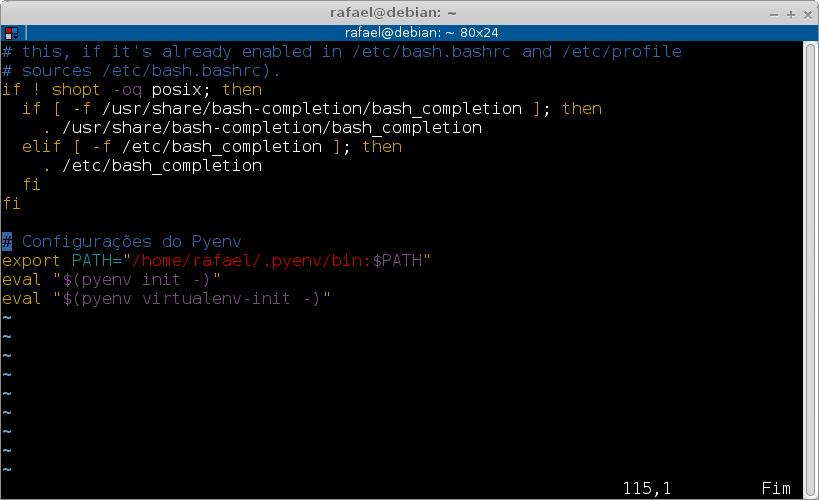

Muitos tem a dúvida de como instalar Python no Linux e Mac OSX, hoje vou postar aqui um passo a passo bem básico pra que você consiga instalar Python 3.5 (e qualquer outra) no Linux e com poucas modificações também no Mac OSX.
Não abordarei especificamente o passo a passo para realizar a instalação no Mac OSX, pois no atual momento não disponho de um computador com tal Sistema operacional em mãos. Porém já ajudei alguns amigos a realizar o procedimento mostrado neste post também no Mac OSX, e sem muitas dores extras conseguimos realizar estes mesmos procedimentos no Mac OSX.
Vou usar como Linux base a distribuição Debian (a qual gosto muito) na versão Jessie 8.3.0. Estou especificando a versão do Debian e a versão do Python (estável) pois como ambos evoluem com o tempo (e muito rapidamente) então creio eu que logo esse post irá ficar velho.
Baixar, instalar e compilar?
Para os usuários mais "roots" do sistema operacional Linux a primeira coisa que vem em mente é "vou baixar o tar.gz, descompactar, configurar e compilar e o negócio vai sair funcionando lindamente", e realmente este processo funciona. Porém somos programadores, e programadores pensam em fazer a coisa da forma mais fácil possível e mais durável possível.
Agora imagina se você pudesse instalar diversas versões do Python digitando apenas um comando e que ainda você pudesse trocar de versão facilmente entre todas as instaladas no seu computador.... pensou?
Pois é os caras que criaram o pyenv também!
Porém não confunda, virtualenv é uma coisa e pyenv é outra. Abordei o assunto virtualenv em outro post, para entender melhor sobre o virtualenv clique aqui .
O que é o pyenv?
Pyenv é um projeto muito legal que faz com que você consiga ter várias versões do Python na sua máquina e que eles coexistam em paz. Também torna mais fácil (absurdamente fácil) a instalação de QUALQUER distribuição do Python, inclusive as mais "exóticas" como o Anaconda, Miniconda, IronPython, Jython e o Pypy. Dentre estas versões possíveis também é possível instalar o Python 3.5.1 muito facilmente.
Instalando pyenv
Se você usa Mac OSX pode começar com este link:
Se você usa Linux você vai começar instalando as dependências de um script que facilita a instalação do pyenv pra você. Este script depende de dois comandos git e curl, caso você não os tenha instalados, execute o comando abaixo (este comando você precisa executar como root ou com sudo):
# apt-get install curl git
Feito isso vamos prosseguir com instalação usando um script automatizado que a galera do pyenv fez. Execute como usuário normal (não root e sem sudo) o seguinte script abaixo:
$ curl -L https://raw.githubusercontent.com/yyuu/pyenv-installer/master/bin/pyenv-installer | bash
Ao terminar a execução deste script uma saída assim será exibida:
WARNING: seems you still have not added 'pyenv' to the load path.
# Load pyenv automatically by adding
# the following to ~/.bash_profile:
export PATH="/home/rafael/.pyenv/bin:$PATH"
eval "$(pyenv init -)"
eval "$(pyenv virtualenv-init -)"
Obviamente que o caminho dentro da sua variável PATH estará diferente do meu, pois o meu usuário se chama rafael.
Basicamente ao final da instalação conforme mostrado acima o pyenv-installer manda você adicionar as linhas que ele te mostra no seu arquivo ~/.bash_profile, eu sinceramente não gosto de adicionar essas coisas no ~/.bash_profile ao invés disso eu sempre adiciono ao ~/.bashrc.
Então vamos fazer isso, abra seu arquivo ~/.bashrc com seu editor favorito e adicione essas linhas no final do arquivo, conforme mostrado nesta imagem abaixo:
Fiz um comentário (linha em azul) apenas para informar que esta é a configuração do pyenv e manter as coisas organizadas. Feita esta configuração basta executar (como usuário normal não root nem sudo) o comando abaixo, para que seu ambiente seja "populado" com as novas variáveis da configuração que você fez:
$ source ~/.bashrc
Desta forma você poderá chamar o comando pyenv no seu terminal:
$ pyenv
pyenv 20160202-10-ga6f1f48
Usage: pyenv <command> [<args>]
Some useful pyenv commands are:
commands List all available pyenv commands
local Set or show the local application-specific Python version
global Set or show the global Python version
shell Set or show the shell-specific Python version
install Install a Python version using python-build
uninstall Uninstall a specific Python version
rehash Rehash pyenv shims (run this after installing executables)
version Show the current Python version and its origin
versions List all Python versions available to pyenv
which Display the full path to an executable
whence List all Python versions that contain the given executable
See `pyenv help <command>' for information on a specific command.
For full documentation, see: https://github.com/yyuu/pyenv#readme
De cara você vai ter um help bem bacana para entender os comandos. Se quando você executou pyenv a saída mostrada foi parecida, sua instalação correu perfeitamente bem! Caso tenha sido diferente e precisar de alguma ajuda, pode comentar abaixo do post ou me chamar am alguns dos contatos ao lado esquerdo do blog.
Verificando as versões disponíveis para instalação
$ pyenv install -l
Available versions:
.... linhas omitidas ....
3.0.1
3.1
3.1.1
3.1.2
3.1.3
3.1.4
3.1.5
3.2-dev
3.2
3.2.1
3.2.2
3.2.3
3.2.4
3.2.5
3.2.6
3.3.0
3.3-dev
3.3.1
3.3.2
3.3.3
3.3.4
3.3.5
3.3.6
3.4.0
3.4-dev
3.4.1
3.4.2
3.4.3
3.4.4
3.5.0
3.5-dev
3.5.1
3.6-dev
.... linhas omitidas ....
Omiti algumas linhas para que a saída não ficasse tão grande, pois realmente são muitas as versões.
Instalando o Python 3.5.1
No Debian (Ubuntu também usa os mesmos pacotes) você precisará instalar algumas dependências para que o pyenv compile o Python para você, como root ou usando sudo execute o comando abaixo:
# apt-get install -y make build-essential libssl-dev zlib1g-dev libbz2-dev libreadline-dev libsqlite3-dev wget curl llvm libncurses5-dev libncursesw5-dev
Caso você esteja usando outro sistema operacional que não seja o Debian, você poderá consultar as dependências que precisará instalar neste link:
Depois de instalar as dependências necessárias, execute (como usuário normal sem root e sem sudo) o comando para instalação do Python 3.5.1 conforme mostrado abaixo:
$ pyenv install 3.5.1
A saída será similar a esta:
Downloading Python-3.5.1.tgz...
-> https://www.python.org/ftp/python/3.5.1/Python-3.5.1.tgz
Installing Python-3.5.1...
Installed Python-3.5.1 to /home/rafael/.pyenv/versions/3.5.1
Se a sua saída foi similar a esta o Python 3.5.1 foi instalado com sucesso! Caso tenha sido diferente e precisar de alguma ajuda, pode comentar abaixo do post ou me chamar am alguns dos contatos ao lado esquerdo do blog.
Como usar o(s) Python(s) instalado(s)?
Todo sistema Linux/Mac OSX geralmente já vem com alguma versão do Python instalada (2.6, 2.7, 3 ou 3.4 geralmente), o pyenv vai isolar a versão do Python do sistema operacional caso você precise dele posteriormente você conseguirá usá-lo sem problemas.
Para ver as versões disponíveis para uso execute o comando abaixo:
$ pyenv versions
* system (set by /home/rafael/.pyenv/version)
3.5.1
No caso agora no meu sistema eu tenho a versão system que é a que estava instalada anteriormente com meu sistema operacional e também a versão 3.5.1. O símbolo * especifica qual a versão você está utilizando neste momento.
Você poderá mudar a versão utilizada usando o parâmetro global do pyenv desta maneira:
$ pyenv global 3.5.1
$ pyenv versions
system
* 3.5.1 (set by /home/rafael/.pyenv/version)
Observe que ao executar pyenv versions novamente ele mostrou que a versão a ser utilizada agora é 3.5.1, vamos executar o interpretador Python para ver se tudo correu bem:
$ python
Python 3.5.1 (default, Feb 24 2016, 21:38:32)
[GCC 4.9.2] on linux
Type "help", "copyright", "credits" or "license" for more information.
>>>
Perfeitamente bem! Agora vamos mudar para a versão system e chamar o interpretador novamente para ver o que acontece:
$ pyenv global system
$ pyenv versions
* system (set by /home/rafael/.pyenv/version)
3.5.1
$ python
$ python
Python 2.7.9 (default, Mar 1 2015, 12:57:24)
[GCC 4.9.2] on linux2
Type "help", "copyright", "credits" or "license" for more information.
>>>
Funcionou perfeitamente bem novamente!
Então agora você possui um pyenv funcional juntamente com uma versão 3.5.1 do Python já instalada e apto a instalar qualquer outra disponível!
Você é um cara preocupado? Eu também...
Outra coisa que você não precisa se preocupar é que o pyenv instala e faz modificações no seu sistema a nível de usuário, ou seja, nada do que você faça com ele vai desgraçar seu sistema operacional inteiro, no máximo vai dar uma zuada na configuração do Python do seu usuário somente, em casos extremos você poderá desinstalar o pyenv de forma fácil simplesmente apagando a pasta dele que fica em sua home:
$ rm -fr ~/.pyenv
E posteriormente remover as configurações de variáveis que colocamos no ~/.bashrc.
Conclusão
O pyenv facilita muito as coisas pra nós, com ele podemos testar distribuições do Python das quais nunca ouvimos falar antes, sem o mínimo esforço para instalar e também para desinstalar (utilizando o parâmetro uninstall do pyenv). Espero que tenham gostado do post! Deixem seus comentários!
Referências
Links (ambos com documentações em seus próprios repositórios):
comments powered by Disqus